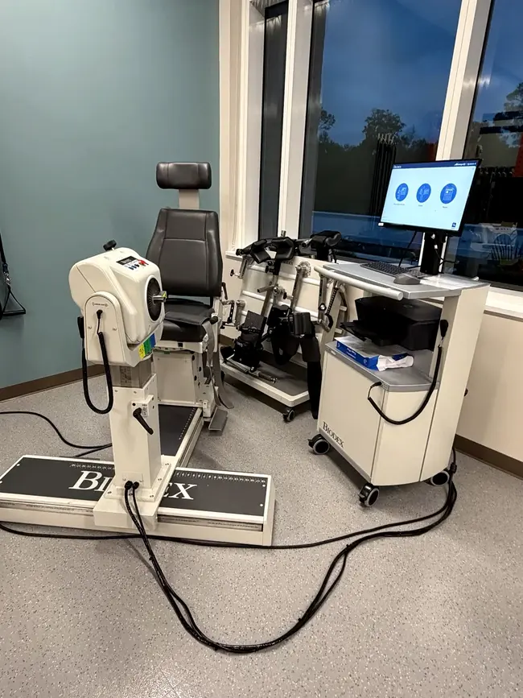

Biodex Balance System SD repair.
Balance System SD and BioSway service, nationwide, from a former Biodex field service engineer with 30+ years of Biodex experience.

Keep balance testing and training on schedule.
Clinics and sports medicine programs use the Balance System SD for balance assessment, fall-risk screening and training. When the platform, readings or display start acting up, results can’t be trusted and the system ends up sitting in the corner.
As a former Biodex field service engineer with 30+ years of Biodex experience, I’ve serviced their equipment across the United States and the Caribbean. Today I’m the only factory-trained independent technician in the country for Biodex/SMTI equipment, and an SMTI-authorized Biodex service provider, so you get factory-level knowledge without waiting on the manufacturer’s schedule.
Biodex Balance System SD problems I repair.
An accurate diagnosis keeps a balance system repair simple. I find the actual fault before replacing parts.
Platform
Platform problems that affect movement, stability settings or locking.
Sensors & readings
Sensor problems that make test results inconsistent or unreliable.
Display & electronics
Display, power and electronics faults that keep the system from starting or running a test.
Reliable results start with a well-maintained system.
Preventive maintenance catches wear on balance equipment before it affects patient testing or turns into a breakdown.
I also provide on-site clinician training on this equipment, from patient setup and testing protocols to interpreting results.
Equipment is restored to the manufacturer’s specifications and never modified, and every visit ends with a documented service record. See Preventive Maintenance for how a maintenance plan works.
Clear steps from first call to written report.
Triage by phone or email
Tell me the model, symptoms, error messages and location. Many problems can be narrowed down before a visit, so I arrive with the right plan and parts.
On-site repair
Florida facilities are served statewide. Outside Florida, on-site service is scheduled nationwide based on location, scope and availability. While on site, we can also service your other PT and fitness equipment.
Documented results
You get a written summary of what was found, what was done, and any recommended next steps.
Frequently asked questions
Do you also service the BioSway?
Yes. I service the BioSway portable balance system and the VibroTactile System as well as the Balance System SD.
Do you service this equipment outside Florida?
Yes. Biodex service is available nationwide. On-site visits outside Florida are scheduled based on location, scope and availability, and many issues can be narrowed down by phone or email first.
What should I have ready when I call?
The model, serial number, the symptoms, any error messages, when the problem started and your facility location. Photos of the equipment and the screen help a lot.
Are you affiliated with Biodex?
Yes. Precision MedTech Services is the only SMTI-authorized Biodex service provider in Florida. SMTI now owns the Biodex physical medicine line. I also operate as an independent service company, and I spent 30 years as a Biodex field service engineer.
More Biodex service: All Biodex repair · System 4, 3 & 2 · Balance System SD · Gait Trainer 3 · Preventive Maintenance
Have a Biodex system that needs attention?
Tell us the model, symptoms, error codes, and facility location. We’ll discuss the next steps.